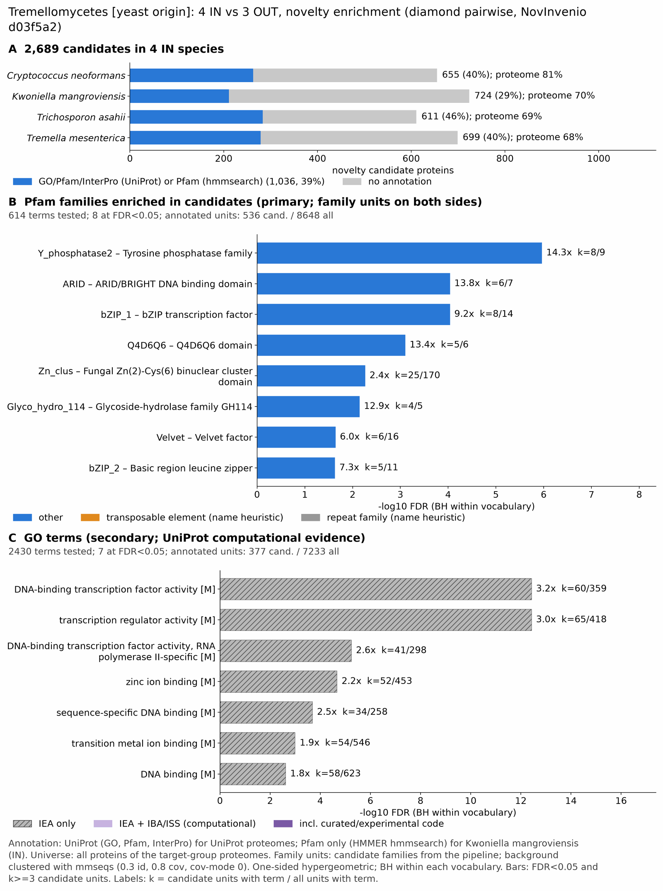

yc tremellomycetes: functional enrichment (novelty)
One-sided hypergeometric test per term; Benjamini-Hochberg FDR within each scope, level and vocabulary. Candidates are the novelty candidates: gene families present in the IN group and absent from the OUT group. Universe: proteome. Background clustered: True (29118 sequences in 15031 clusters, mmseqs easy-cluster --min-seq-id 0.3 -c 0.8). Family level: one unit per candidate family and per background cluster.
Sources: Pfam: 2026-01-27-Pfam38.2; InterPro entries: 110.0; GO: releases/2026-07-26; analysis generated 2026-10-24T14:38:03. Source tables: /bigdata/stajichlab/jstajich/projects/NovInvenio_Investigations/studies/fungi/yeast_convergence/yc_tremellomycetes/analysis/enrichment/outputs/proteome_clustered.
Full record: PROVENANCE. Run report: report.html.
Related: yeast_convergence: comparison across contrasts
- Annotation provenance is not fully recorded: PROVENANCE.yaml lists the per-species annotation files and their checksums, but not the UniProt release they come from.
- GO results are secondary. GO annotations include computational evidence (IEA, IBA); the GO evidence column shows if a term has non-IEA support.
- Candidate families (pipeline clustering of candidates) and background clusters (mmseqs clustering of the background proteome) are made by different runs, so family-level counts are not fully comparable.
- Low annotation: the candidate set has less than 50% annotation for Pfam 29.2%, InterPro 30.5%, GO 17.6%, any vocabulary 38.5%. Enrichment for these vocabularies has low power.
- GO and InterPro cover only 3 of 4 species: CneoH99, Tricasah, Tremes. No GO and InterPro annotation for Kwonmang; this species adds no units to the GO and InterPro tests, so those results describe the covered species only.
Summary figure

Annotation coverage
Fraction of proteins with at least one term per vocabulary. Universe = all proteins of the species; candidates = the candidate set.
| Species | Set | Proteins | Pfam | Pfam clan | InterPro | GO | Any |
|---|---|---|---|---|---|---|---|
| CneoH99 | universe | 6965 | 75.8% | 61.7% | 81.0% | 71.3% | 81.3% |
| CneoH99 | candidates | 655 | 28.1% | 19.5% | 39.9% | 23.8% | 40.2% |
| Kwonmang | universe | 8266 | 69.7% | 57.2% | 0.0% | 0.0% | 69.7% |
| Kwonmang | candidates | 724 | 29.1% | 21.8% | 0.0% | 0.0% | 29.1% |
| Tricasah | universe | 8515 | 61.7% | 51.1% | 68.6% | 57.5% | 69.0% |
| Tricasah | candidates | 611 | 31.6% | 22.9% | 46.0% | 26.4% | 46.3% |
| Tremes | universe | 8061 | 62.9% | 51.2% | 68.2% | 58.6% | 68.4% |
| Tremes | candidates | 699 | 28.3% | 20.6% | 39.6% | 22.5% | 39.9% |
| ALL_IN | universe | 31807 | 67.2% | 55.0% | 53.4% | 45.9% | 71.7% |
| ALL_IN | candidates | 2689 | 29.2% | 21.2% | 30.5% | 17.6% | 38.5% |
Tests summary
Per vocabulary: terms with FDR < 0.05 / terms tested. Protein level counts proteins; family level counts candidate families and background clusters.
| Scope | Level | Cand. units | Pfam sig / tested | Pfam clan sig / tested | InterPro sig / tested | GO sig / tested |
|---|---|---|---|---|---|---|
| whole_set | family | 1838 | 8 / 614 | 3 / 276 | 8 / 1088 | 7 / 2430 |
| whole_set | protein | 2689 | 33 / 1489 | 16 / 386 | 28 / 2584 | 26 / 3529 |
| CneoH99 | family | 644 | 1 / 219 | 2 / 187 | 5 / 586 | 7 / 1896 |
| CneoH99 | protein | 655 | 1 / 271 | 2 / 205 | 5 / 714 | 7 / 1989 |
| Kwonmang | family | 715 | 1 / 346 | 0 / 199 | 0 / 0 (not_available_no_annotated_units) | 0 / 0 (not_available_no_annotated_units) |
| Kwonmang | protein | 724 | 1 / 397 | 0 / 214 | 0 / 0 (not_available_no_annotated_units) | 0 / 0 (not_available_no_annotated_units) |
| Tremes | family | 686 | 3 / 221 | 1 / 185 | 3 / 586 | 3 / 1881 |
| Tremes | protein | 699 | 4 / 253 | 2 / 196 | 6 / 671 | 3 / 1951 |
| Tricasah | family | 600 | 0 / 235 | 0 / 207 | 0 / 616 | 2 / 1846 |
| Tricasah | protein | 611 | 1 / 271 | 2 / 215 | 3 / 714 | 2 / 1909 |
Top 25 Pfam terms (whole set, family level)
25 rows shown, ordered by FDR then p-value; 8 have FDR < 0.05 (bold). 2 are tagged TE: transposable-element families, flagged by name (heuristic, not a test).
| Term | Name | k / N cand. | n / M bg | Fold | FDR (BH) |
|---|---|---|---|---|---|
| PF03162 | Y_phosphatase2: Tyrosine phosphatase family | 8 / 536 | 9 / 8648 | 14.342 | 1.08e-06 |
| PF01388 | ARID: ARID/BRIGHT DNA binding domain | 6 / 536 | 7 / 8648 | 13.829 | 9.12e-05 |
| PF00170 | bZIP_1: bZIP transcription factor | 8 / 536 | 14 / 8648 | 9.22 | 9.12e-05 |
| PF28980 | Q4D6Q6: Q4D6Q6 domain | 5 / 536 | 6 / 8648 | 13.445 | 7.85e-04 |
| PF00172 | Zn_clus: Fungal Zn(2)-Cys(6) binuclear cluster domain | 25 / 536 | 170 / 8648 | 2.373 | 0.005 |
| PF03537 | Glyco_hydro_114: Glycoside-hydrolase family GH114 | 4 / 536 | 5 / 8648 | 12.907 | 0.007 |
| PF11754 | Velvet: Velvet factor | 6 / 536 | 16 / 8648 | 6.05 | 0.023 |
| PF07716 | bZIP_2: Basic region leucine zipper | 5 / 536 | 11 / 8648 | 7.334 | 0.023 |
| PF02996 | Prefoldin: Prefoldin subunit | 4 / 536 | 8 / 8648 | 8.067 | 0.057 |
| PF11790 | Glyco_hydro_cc: Glycosyl hydrolase catalytic core | 5 / 536 | 14 / 8648 | 5.762 | 0.069 |
| PF00651 | BTB: BTB/POZ domain | 6 / 536 | 22 / 8648 | 4.4 | 0.098 |
| PF00641 | Zn_ribbon_RanBP: Zn-finger in Ran binding protein and others | 3 / 536 | 5 / 8648 | 9.681 | 0.107 |
| PF03134 | TB2_DP1_HVA22: TB2/DP1, HVA22 family | 4 / 536 | 10 / 8648 | 6.454 | 0.107 |
| PF02338 | OTU: OTU-like cysteine protease | 5 / 536 | 17 / 8648 | 4.745 | 0.131 |
| PF12752 | SUZ: SUZ domain | 3 / 536 | 6 / 8648 | 8.067 | 0.158 |
| PF20238 | BIM1-like_dom: Copper acquisition factor BIM1-like | 3 / 536 | 6 / 8648 | 8.067 | 0.158 |
| PF14223 | Retrotran_gag_2: gag-polypeptide of LTR copia-type TE | 4 / 536 | 12 / 8648 | 5.378 | 0.175 |
| PF13359 | DDE_Tnp_4: DDE superfamily endonuclease TE | 3 / 536 | 7 / 8648 | 6.915 | 0.234 |
| PF01042 | Ribonuc_L-PSP: Endoribonuclease L-PSP | 3 / 536 | 8 / 8648 | 6.05 | 0.322 |
| PF02037 | SAP: SAP domain | 3 / 536 | 8 / 8648 | 6.05 | 0.322 |
| PF19271 | Nis1: Nis1 family | 3 / 536 | 10 / 8648 | 4.84 | 0.594 |
| PF00046 | Homeodomain: Homeodomain | 4 / 536 | 18 / 8648 | 3.585 | 0.594 |
| PF00249 | Myb_DNA-binding: Myb-like DNA-binding domain | 4 / 536 | 18 / 8648 | 3.585 | 0.594 |
| PF00657 | Lipase_GDSL: GDSL-like Lipase/Acylhydrolase | 2 / 536 | 5 / 8648 | 6.454 | 0.799 |
| PF05426 | Alginate_lyase: Alginate lyase | 2 / 536 | 5 / 8648 | 6.454 | 0.799 |
Top 25 InterPro terms (whole set, family level)
25 rows shown, ordered by FDR then p-value; 8 have FDR < 0.05 (bold).
| Term | Name | k / N cand. | n / M bg | Fold | FDR (BH) |
|---|---|---|---|---|---|
| IPR004827 | Domain:Basic-leucine zipper domain | 17 / 631 | 35 / 8766 | 6.748 | 4.40e-08 |
| IPR046347 | Homologous_superfamily:Basic-leucine zipper domain superfamily | 15 / 631 | 32 / 8766 | 6.512 | 5.97e-07 |
| IPR004861 | Family:Atypical dual-specificity phosphatase Siw14-like | 7 / 631 | 8 / 8766 | 12.156 | 2.64e-05 |
| IPR036431 | Homologous_superfamily:ARID DNA-binding domain superfamily | 6 / 631 | 8 / 8766 | 10.419 | 9.13e-04 |
| IPR063889 | Domain:Q4D6Q6 domain | 5 / 631 | 6 / 8766 | 11.577 | 0.002 |
| IPR001138 | Domain:Zn(2)Cys(6) fungal-type DNA-binding domain | 29 / 631 | 177 / 8766 | 2.276 | 0.004 |
| IPR001606 | Domain:ARID DNA-binding domain | 5 / 631 | 7 / 8766 | 9.923 | 0.005 |
| IPR036864 | Homologous_superfamily:Zn(2)-C6 fungal-type DNA-binding domain superfamily | 27 / 631 | 173 / 8766 | 2.168 | 0.014 |
| IPR009057 | Homologous_superfamily:Homeodomain-like superfamily | 10 / 631 | 49 / 8766 | 2.835 | 0.208 |
| IPR021740 | Family:Velvet factor | 5 / 631 | 14 / 8766 | 4.962 | 0.208 |
| IPR029021 | Homologous_superfamily:Protein-tyrosine phosphatase-like | 7 / 631 | 27 / 8766 | 3.602 | 0.208 |
| IPR001005 | Domain:SANT/Myb domain | 7 / 631 | 28 / 8766 | 3.473 | 0.208 |
| IPR037525 | Domain:Velvet domain | 5 / 631 | 15 / 8766 | 4.631 | 0.208 |
| IPR038491 | Homologous_superfamily:Velvet domain superfamily | 5 / 631 | 15 / 8766 | 4.631 | 0.208 |
| IPR024771 | Domain:SUZ domain | 3 / 631 | 5 / 8766 | 8.335 | 0.208 |
| IPR046530 | Domain:Copper acquisition factor BIM1-like domain | 3 / 631 | 5 / 8766 | 8.335 | 0.208 |
| IPR046936 | Family:Copper acquisition factor BIM1-like | 3 / 631 | 5 / 8766 | 8.335 | 0.208 |
| IPR038765 | Homologous_superfamily:Papain-like cysteine peptidase superfamily | 12 / 631 | 69 / 8766 | 2.416 | 0.208 |
| IPR013087 | Domain:Zinc finger C2H2-type | 13 / 631 | 80 / 8766 | 2.257 | 0.251 |
| IPR000679 | Domain:Zinc finger, GATA-type | 6 / 631 | 25 / 8766 | 3.334 | 0.353 |
| IPR013088 | Homologous_superfamily:Zinc finger, NHR/GATA-type | 6 / 631 | 25 / 8766 | 3.334 | 0.353 |
| IPR050815 | Family:Transcription factor, fungi | 5 / 631 | 18 / 8766 | 3.859 | 0.353 |
| IPR032675 | Homologous_superfamily:Leucine-rich repeat domain superfamily | 9 / 631 | 49 / 8766 | 2.552 | 0.353 |
| IPR061502 | Domain:Copia/RE1/RE2-like, N-terminal domain | 4 / 631 | 12 / 8766 | 4.631 | 0.374 |
| IPR004345 | Family:TB2/DP1/HVA22 | 3 / 631 | 7 / 8766 | 5.954 | 0.437 |
Top 15 GO terms (whole set, family level) — secondary, computational evidence (IEA/IBA) included
15 rows shown, ordered by FDR then p-value; 7 have FDR < 0.05 (bold).
| Term | Name | k / N cand. | n / M bg | Fold | FDR (BH) | GO evidence | Families with non-IEA |
|---|---|---|---|---|---|---|---|
| GO:0003700 | molecular_function:DNA-binding transcription factor activity | 60 / 377 | 359 / 7233 | 3.207 | 3.77e-13 | IEA_only | 0 |
| GO:0140110 | molecular_function:transcription regulator activity | 65 / 377 | 418 / 7233 | 2.983 | 3.77e-13 | IEA_only | 0 |
| GO:0000981 | molecular_function:DNA-binding transcription factor activity, RNA polymerase II-specific | 41 / 377 | 298 / 7233 | 2.64 | 5.76e-06 | IEA_only | 0 |
| GO:0008270 | molecular_function:zinc ion binding | 52 / 377 | 453 / 7233 | 2.202 | 2.16e-05 | IEA_only | 0 |
| GO:0043565 | molecular_function:sequence-specific DNA binding | 34 / 377 | 258 / 7233 | 2.528 | 2.06e-04 | IEA_only | 0 |
| GO:0046914 | molecular_function:transition metal ion binding | 54 / 377 | 546 / 7233 | 1.897 | 0.001 | IEA_only | 0 |
| GO:0003677 | molecular_function:DNA binding | 58 / 377 | 623 / 7233 | 1.786 | 0.002 | IEA_only | 0 |
| GO:1990837 | molecular_function:sequence-specific double-stranded DNA binding | 22 / 377 | 189 / 7233 | 2.233 | 0.095 | IEA_only | 0 |
| GO:0000976 | molecular_function:transcription cis-regulatory region binding | 19 / 377 | 164 / 7233 | 2.223 | 0.204 | IEA_only | 0 |
| GO:0001067 | molecular_function:transcription regulatory region nucleic acid binding | 19 / 377 | 164 / 7233 | 2.223 | 0.204 | IEA_only | 0 |
| GO:0009975 | molecular_function:cyclase activity | 3 / 377 | 5 / 7233 | 11.511 | 0.287 | IEA_only | 0 |
| GO:0046872 | molecular_function:metal ion binding | 59 / 377 | 778 / 7233 | 1.455 | 0.349 | IEA_only | 0 |
| GO:0003690 | molecular_function:double-stranded DNA binding | 23 / 377 | 230 / 7233 | 1.919 | 0.359 | IEA_only | 0 |
| GO:0004526 | molecular_function:ribonuclease P activity | 3 / 377 | 6 / 7233 | 9.593 | 0.391 | IEA_only | 0 |
| GO:0004557 | molecular_function:alpha-galactosidase activity | 3 / 377 | 6 / 7233 | 9.593 | 0.391 | IEA_only | 0 |
Actin cytoskeleton controls
Known actin-related families and how many of their proteins pass each filter. Protein ID columns are left out.
| control | pfam_ids | desc_regex | IN_universe | IN_in_matrix | IN_pass_ingroup_rule | candidates | near_miss_out1 | near_miss_out2 | n_CneoH99 | n_Kwonmang | n_Tricasah | n_Tremes | n_Dacrprim | n_Calocorn | n_Ccin |
|---|---|---|---|---|---|---|---|---|---|---|---|---|---|---|---|
| Arp2/3 ARPC2 (P34-Arc) | PF04045 | 4 | 4 | 4 | 0 | 0 | 0 | 1 | 1 | 1 | 1 | 1 | 1 | 1 | |
| Arp2/3 ARPC3 (P21-Arc) | PF04062 | 4 | 4 | 4 | 0 | 0 | 0 | 1 | 1 | 1 | 1 | 1 | 1 | 1 | |
| Arp2/3 ARPC4 | PF05856 | 4 | 4 | 4 | 0 | 0 | 0 | 1 | 1 | 1 | 1 | 1 | 1 | 1 | |
| Arp2/3 ARPC5 (P16-Arc) | PF04699 | 4 | 4 | 4 | 0 | 0 | 0 | 1 | 1 | 1 | 1 | 2 | 1 | 1 | |
| Arp2/3 ARPC1 (description only) | arp2/3 complex.*(41|p41|subunit 1)|ARPC1 | 0 | 0 | 0 | 0 | 0 | 0 | 0 | 0 | 0 | 0 | 0 | 0 | 0 | |
| Arp2 / Arp3 (description only) | actin-related protein (2|3)\b|\bARP[23]\b | 16 | 16 | 16 | 0 | 0 | 0 | 5 | 0 | 6 | 5 | 8 | 6 | 5 | |
| WAVE complex NCKAP1 | PF09735 | 0 | 0 | 0 | 0 | 0 | 0 | 0 | 0 | 0 | 0 | 0 | 0 | 0 | |
| WAVE complex CYFIP (FragX_IP) | PF05994 | 0 | 0 | 0 | 0 | 0 | 0 | 0 | 0 | 0 | 0 | 0 | 0 | 0 | |
| WAVE complex ABI | PF07815|PF27594 | 0 | 0 | 0 | 0 | 0 | 0 | 0 | 0 | 0 | 0 | 0 | 0 | 0 | |
| SCAR/WAVE (SCAR_helical) | PF27569 | 0 | 0 | 0 | 0 | 0 | 0 | 0 | 0 | 0 | 0 | 0 | 0 | 0 | |
| WASP family (WH1) | PF00568 | 4 | 4 | 4 | 0 | 0 | 0 | 1 | 1 | 1 | 1 | 1 | 1 | 2 | |
| WH2 motif (WASP, WAVE, others) | PF02205 | 8 | 8 | 8 | 0 | 0 | 2 | 2 | 2 | 2 | 2 | 3 | 2 | 2 | |
| Formin FH2 | PF02181 | 6 | 6 | 4 | 0 | 0 | 0 | 1 | 2 | 1 | 2 | 1 | 1 | 2 | |
| Formin Drf_GBD / Drf_FH3 / Drf_DAD | PF06371|PF06367|PF06345 | 10 | 10 | 8 | 0 | 0 | 0 | 2 | 3 | 2 | 3 | 2 | 2 | 3 | |
| Ena/VASP (VASP_tetra) | PF08776 | 0 | 0 | 0 | 0 | 0 | 0 | 0 | 0 | 0 | 0 | 0 | 0 | 0 | |
| Coronin (description only) | coronin | 3 | 3 | 3 | 0 | 0 | 0 | 1 | 0 | 1 | 1 | 1 | 1 | 1 | |
| Cortactin (HS1_rep) | PF02218 | 0 | 0 | 0 | 0 | 0 | 0 | 0 | 0 | 0 | 0 | 0 | 0 | 0 | |
| Myosin 2 tail (Myosin_tail_1) | PF01576 | 0 | 0 | 0 | 0 | 0 | 0 | 0 | 0 | 0 | 0 | 0 | 0 | 1 | |
| Myosin head (all myosins) | PF00063 | 22 | 20 | 19 | 0 | 0 | 0 | 4 | 4 | 6 | 8 | 4 | 5 | 5 |
Page written by bin/generate_enrichment_page.py.